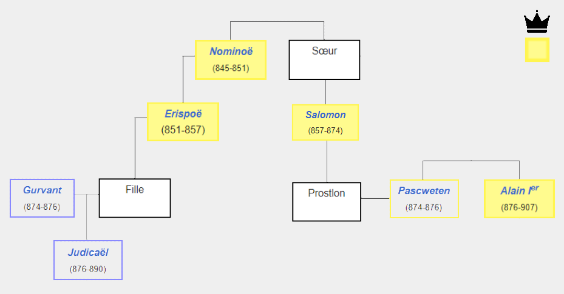
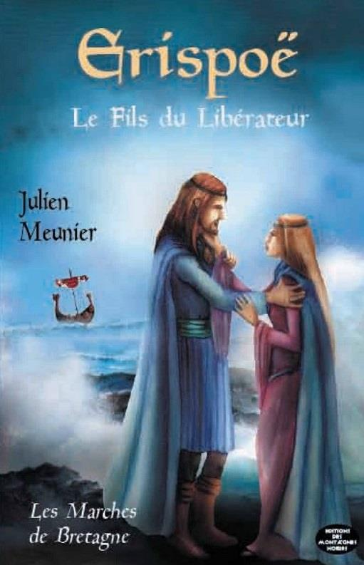
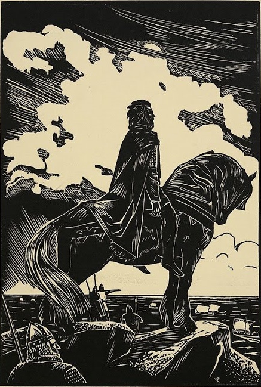

874-876
874-876
| 🡰 Guerre de Succession 🡲 | Menu Histoire 🏰 |
874-876
Pascuueten (Paskwezhen) est comte de Vannes et de Nantes. Il est marié à la fille du Roi Salomon de Bretagne, la pricesse de Bretagne Prostlon décédée en Janvier 876. Pascweten est le frère d'Alain le Grand, futur Roi Alain Ier de Bretagne. Pascweten est compte sous les règnes d'Erispoë puis de Salomon, et un proche conseiller de Salomon, c'est lui qui signa en 867 le traîté de Compiègne qui fera aquérir au Royaume de Bretagne le Cotentin, l'Avranchin et les Îles Anglo-Normandes. Il fera cependant partie du complot visant à assasiner le Roi Salomon de Bretagne avec Gurwant et Guigon en 874. Il meurt début juin 876, son frère Alain hérite de son titre de comte de Vannes la même année.
 |
 |  |
| Blason Vannetais | Arbre Généalogique Simplifié | Blason Nantais |
Gurwant est un chef breton, comte de Rennes, il a contribué avec Pascuueten au régicide de Salomon de Bretagne. Il aurait été marié à une fille d'Erispoë, ancien Roi de Bretagne, possiblement la fille d'Erispoë dont le mariage avec le Roi de Francie Occidentale Louis II, fils de Charles II le Chauve, ait été annulé par l'assassinat d'Erispoë par Salomon dans le but de maintenir la souveraineté du Royaume de Bretagne vis-à-vis des Francs. Il meurt à Rennes en 876 la même année que Pascweten.
 |
 | |
| Blason Rennais | Arbre Généalogique Simplifié | Erispoë et sa Fille Roman de Julien Meunier |
Pascweten et Gurwant sont ensuite tous deux prétendants à la couronne de Bretagne. Ils se réclament tous deux légitimes au trône de Bretagne, Pascuueten car il est le gendre de Salomon de Bretagne avec son mariage avec la princesse Prostlon, et Gurvant car il est le gendre d'Erispoë par son mariage avec sa fille. En 875, l'armée de Pascweten attaque celle de Gurwant à proximité de Rennes. Pascweten aurait reçu l'aide de mercenaires vikings, mais il échoua à deux reprises malgré une supériorité numérique, Gurwant mourra à Rennes d'une maladie en 876, la même année que Pascweten. Le frère de Pascweten, Alain le Grand hérite du titre de comte de Vannes et de Nantes, tandis que Judicaël, fils de Gurvant hérite du titre de Comte de Rennes. Alain le Grand et Judicaël s'affronteront de la même manière dans une guerre de Succession jusqu'à leur réconciliation dans le but de combattre pour le Royaume de Bretagne ensemble contre les forces Normandes et la mort de Judicaël qui fera Roi Alain Ier de Bretagne.
|
 | |
| Blason de Pascweten, Comte de Vannes |
Alain le Grand, frère de Pascweten (Futur Alain Ier de Bretagne) |
Blason de Gurwant, Comte de Rennes |